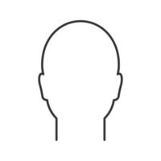
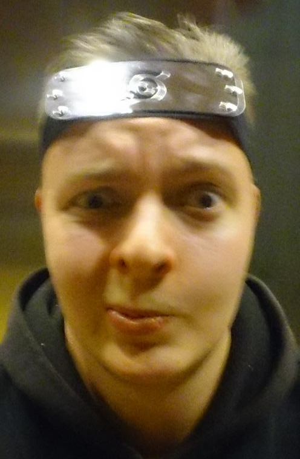
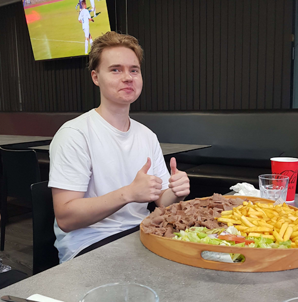
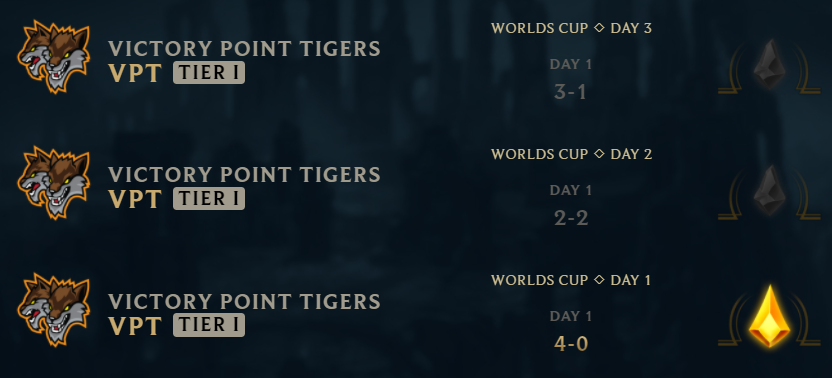

Victory point Tigers
Victory point Tigers
Victory point Tigers
Victory point Tigers on Jyväskyläläisen pelikahvila Victory pointin epävirallinen esports-joukkue.
Rosteri
- Veijari
Turun(Paimion) mahtavin midlaner, joka on hionut akali taitojaan jo yli kymmenen vuoden ajan, samalla larpaten Westriceä.
- Sampsa
Länsi-Vantaan, sekä mahdollisesti koko Uudenmaan hurjin toplaneri, joka pyörittää vihollisia kuin Garen miekkaansa. (toplane on ihan perseestä)
- Summanen
Arttu "Moskovan kauhu" Summanen, jokaisen junglerin kauhu. Junglerit Mikkelin betoniviidakosta Moskovaan asti pelkäävät tätä absoluuttista yksikköä. On kehittänyt kuuluisan "Jatketaan, jatketaan!" taktiikan, jolla ei vieläkään ole voitettu yhtään invadea.
- Guuger
Pieksämäen oma Leroy Jenkins. Luontainen ADC-pelaaja(pakotettu). Yleisin vastaus pelikutsuihin: "Ei pysty, raidi kesken".
- Severi
Botlanen support kaksikon sarvekas osapuoli. Perimätiedon mukaan Severi toimii Helsingin yliopistolla jonkinasteisena puistokemistinä. Severiltä saa snapissä vain kissakuvia.
- Kari
Jyväskylän oma poika(kai). Toinen joukkueen support pelaaja, tunnetaan myös koodinimellä "Järjenääni". On saavuttanut Jodelissa verrattaista menestystä postauksellaan joka käsitteli hänen asunnossaan majailleita animeturisteja.
- Vilee
Joukkueen sielu, manageri, päävalmentaja. Pieksämäen paroni ei kumartele ketään tai mitään. Savossa kiertää legenda että valoisina kesäöinä metsäteillä voi törmätä Toyota Carinaan ja kun se huristelee ohi, jää ympäristöön kaikumaan helvetillinen nauru.
Victory point Tigers joukkue
Victory point Tigers on muutaman hyvän ystävän perustama videopeli joukkue, joka sai nimensä Victory
Point nimisen Jyväskyläläisen pelikahvilan mukaan, pelikahvilan omistaja sattui myös olemaan
joukkueen pelaajien ystävä, ja näin joukkue sai luvan käyttää yhtiön brändiä.
Victory Point on sponsoroinut myös joukkuetta viidellä eurolla.
Victory point Tigers osallistui League of Legendsin virallisiin online "clash" turnauksiin useaan
otteeseen vaihtelevalla kokoonpanolla sekä menestyksellä.
Kaikki turnaukset joihin joukkue osallistui livestriimattiin pelaajien henkilökohtaisilla twitch-tileillä.
